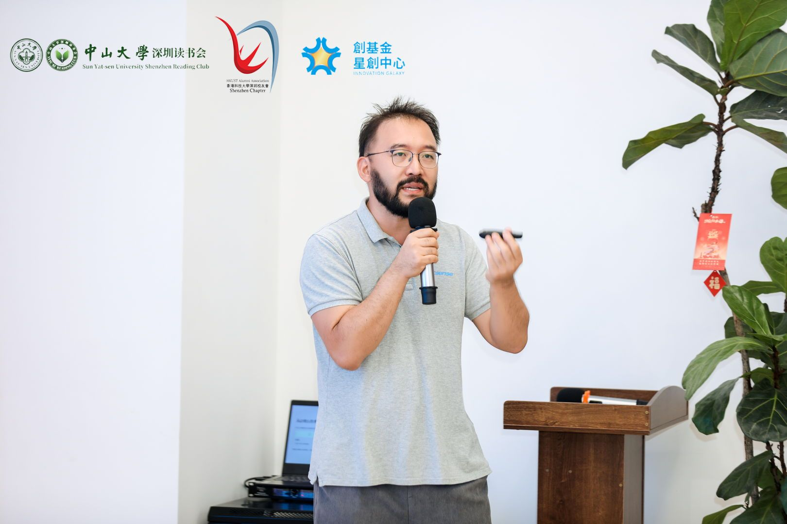
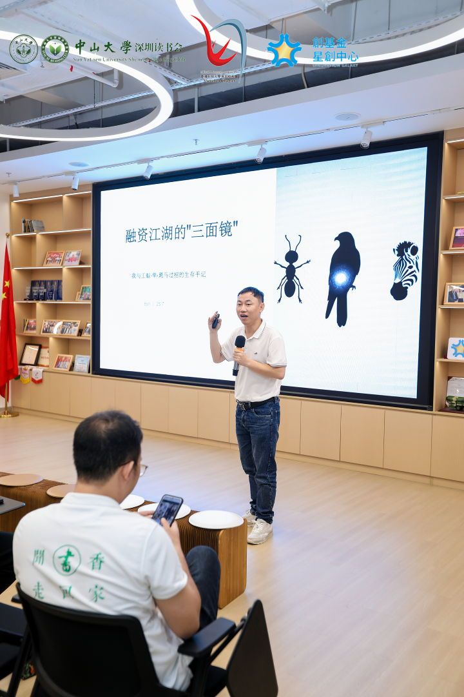
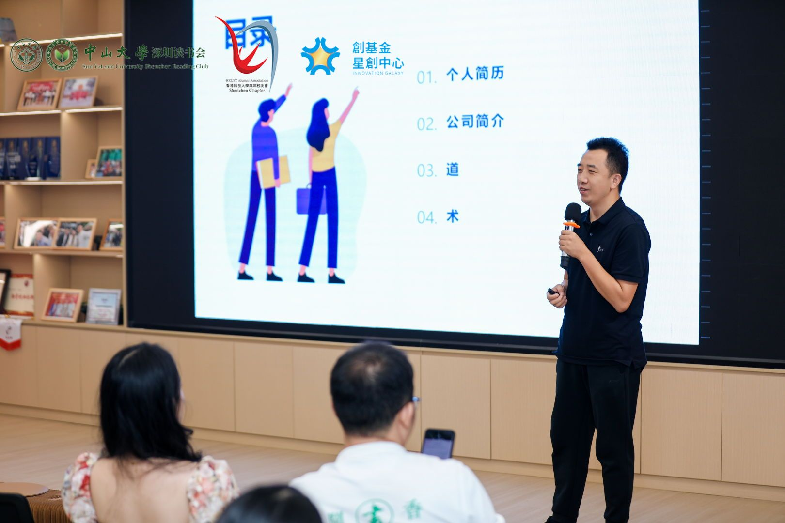
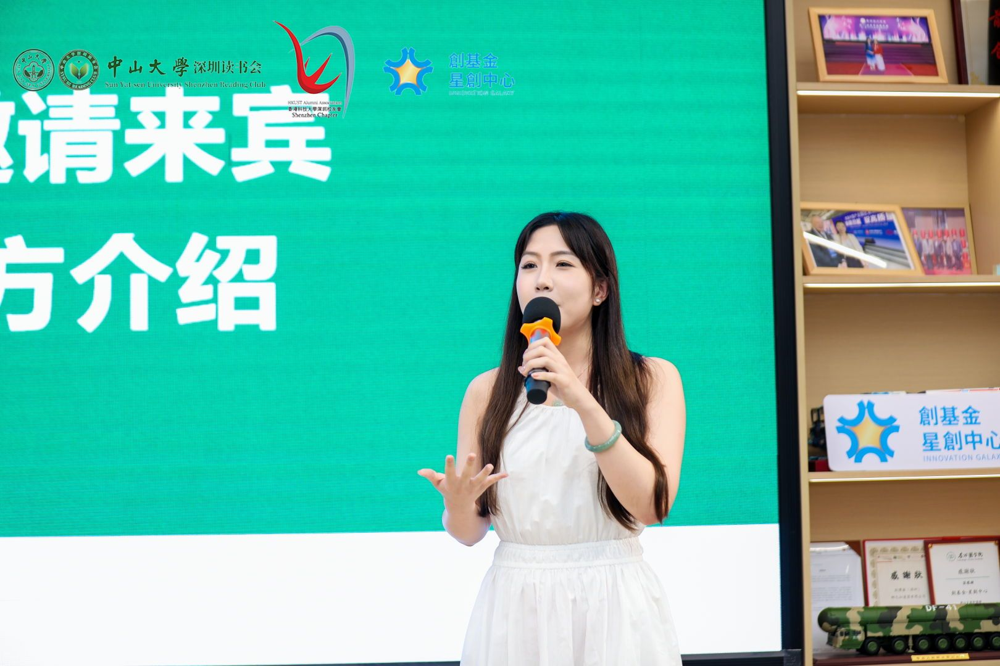

“不确定性”，似乎已经成为这个时代最常被提及的词汇。当旧有的轨道逐渐模糊，当未来的方向不再清晰，我们该如何自处？
那个炎炎午后，在前海青年梦工场座无虚席的现场，我们试图去寻找答案。本期 light 聚焦于三位在风浪中前行的创业者。
创业，既是跌宕起伏的英雄叙事，也是用踩过的坑换来的苦尽甘来。让我们翻开这本实录，去听听那些沉淀在时间里的鲜活故事，看看他们是如何在不确定性中，锚定属于自己的坐标。
初创公司从0到1的信任密码
冬总，一个“站在科技链尖端的男人”，带着ASML核心研发团队的硬核背景，却在众人仰望的巅峰转身跃入创业洪流，成为阜时科技的CTO。他在分享开场晒出了00级中大校庆的老照片，这个细节或许早已暗示了他的创业哲学——再尖端的技术，最终也要落地到人的链接里。

“从0到1，最难的不是技术，而是让客户相信你能交付。”他用三个关键词拆解了初创公司拿下第一单的本质：免责、信任、利益，但顺序绝不能颠倒。
“千万不要一上来就谈钱，先让对方相信你不会给他挖坑。”
当谈到如何打动大客户时，他的“卧底理论”令人印象深刻：“找一个能帮你摸清对方决策链条的人，比盲目拜访重要100倍。” 从光刻机到激光雷达芯片，他用10年创业经历证明：所谓商业逻辑的验证，本质是让信任穿过层层组织，最终落在某个人的笃定里。
被投资人打断的三分钟，与反转的8000万
“如果用动物比喻投资人，你觉得会是什么？”许总的开场充满生趣，仿佛一下子把我们带入了动物世界。这位曾任职蒙牛、青岛啤酒的高管，现在是达实旗云的联合创始人，将创业四年期间见过的几百位投资人概括成“工蚁、斑马、鹰隼”三种意象，为我们揭秘资本世界的真相。

遇到斑马型投资人时，他经历了创业以来最戏剧性的反转：开场三分钟被打断“你们是不是没准备好”，却在远程调出医疗数据系统演示后，获得8000万投资。“这种极致直接的批评，其实是免费的战略咨询。”
面对看穿逻辑漏洞的猎手，许总说“坦诚是唯一的铠甲。”坦诚你的漏洞，比包装完美更有说服力。理解资本逻辑，本质是理解不同诉求下的人性。
999个小目标里的修行
当我们把目光转向汤总，这位手握清华硕士、社科院博士头衔的创业者，不惜放弃银行高管职位，成为九有数据库的联合创始人。他用他的经验告诉我们，创业不是宏大叙事，而是必须拆解成一个个可执行、可量化、可落地的小目标。

除了小目标的拆解，汤总的创业之路更是一场“心学修行”。他熟读阳明心学，将“致良知”与“知行合一”融入到创业的每一个决策中。在不确定性中锚定内心的良知坐标，是支撑他走过无数个艰难时刻的定海神针。
也许创业的道路充满泥泞，但只要我们还能在分享中看见彼此眼里的光，这趟旅程就不会孤单。那些在不确定性中锚定坐标的努力，本身就是最动人的风景。

“建立信任始于规避风险，成于专业可靠，最终才导向价值交换。”

准备好分享你的故事了吗？